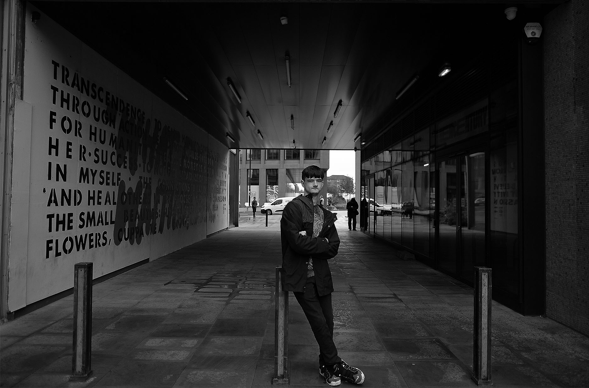

Ryan Hill


This is my website about me. I hope you enjoy looking at my website and I hope you can at least learn somthing about me. This website has everything about me. The website has the skills I can use. The website has a contact form which is used to fill out your details out. It also has hobbies. I made this website to improve on my website design and coding skills. I also made this website because I wanted to test my skills and it was the one thing I know alot about.